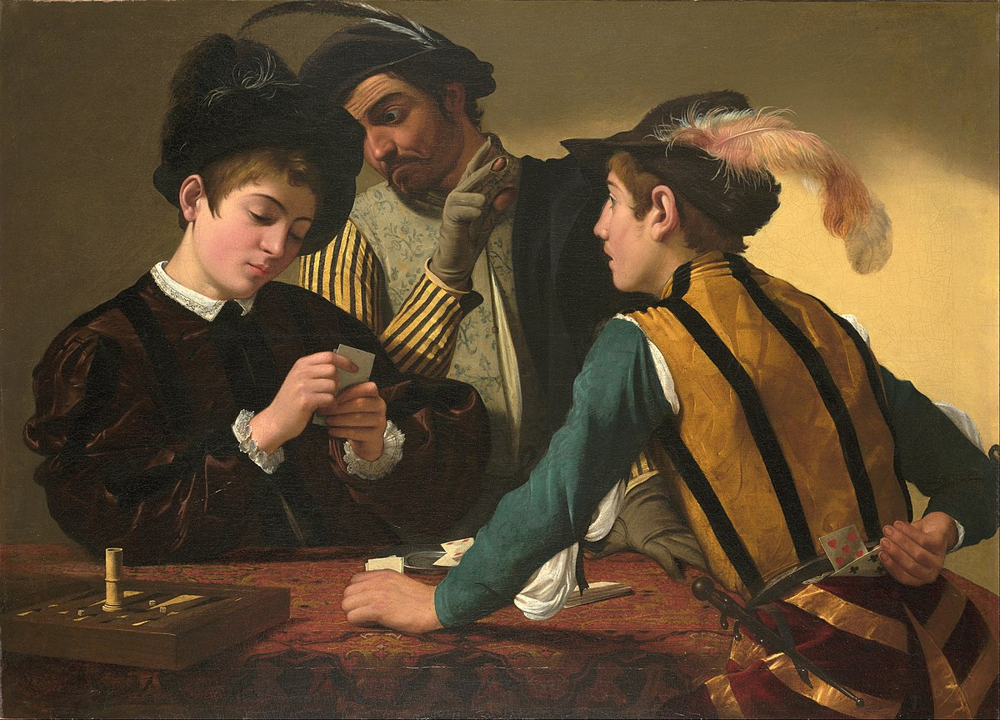

Caravaggio (also known as Michelangelo Merisi da Caravaggio) was a famous Italian Baroque painter who lived in the
second half of the 16th and early 17th centuries. He is considered one of the greatest exponents of realism in painting.
Caravaggio was born in Milan, Italy, in 1571, but lived most of his life in Rome. He was known for his dramatic lighting
technique, known as chiaroscuro, and his realistic, naturalistic approach to the depiction of human figures and
religious subjects.
Among his most famous works are "The Crucifixion of St. Peter", "The Conversion of St. Paul", "The Supper at Emmaus" and "Bacchus". He is also famous for his use of real models, who were often ordinary people or close friends, rather than idealised models.
However, Caravaggio also led a tumultuous life, marked by violence and crime. He was arrested several times for fights and assaults, and in 1606 was convicted of murder and had to flee Rome. He spent the rest of his life on the run from justice and working for various patrons throughout Italy.



TRY SLIDING THE IMAGE
Caravaggio died in 1610 in Porto Ercole in mysterious circumstances. Despite his turbulent life, his work had a great
influence on later European painting and is still highly valued today.
Caravaggio, in his time, challenged the established conventions of religious painting and instead created a more
realistic, naturalistic style that was noted for its dramatic intensity and the contrast between light and dark. This
revolutionary style, which employed the technique of "chiaroscuro" (chiaroscuro) and direct observation of nature,
inspired many later artists to follow in his footsteps.
In short, the influence of Caravaggio's art can be seen in Baroque painting in general and in religious art in
particular, as well as in the evolution of portraiture and genre painting. His realistic and dramatic style continues to
be recognised and admired to this day.